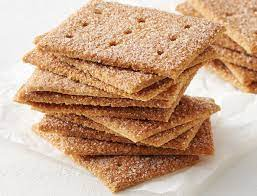

Graham Crackers

Needed something to snack on? Or want an appetizer? Try this receipe for some sweet and tasty graham crackers!
Ingredients
- 1/2 cup shortening
- 3/4 cup packed brown sugar
- 1 teaspoon vanilla extract
- 2 cups whole wheat flour
- 1 cup all-purpose flour
- 1 teaspoon baking powder
- 1 teaspoon baking powder
- 1/2 teaspoon baking soda
- 1/4 teaspoon salt
- 1/4 cup milk
Directions
- Cream together shortening and brown sugar in a medium bowl. Stir in vanilla. Combine whole wheat flour, all-purpose flour, baking powder, baking soda, and salt in a separate bowl; stir into creamed mixture alternately with milk. Cover and chill dough until firm, about 1 hour.
- Preheat the oven to 350 degrees F (175 degrees C). Grease cookie sheets.
- Roll chilled dough out to 1/8-inch thickness on a lightly floured surface. Cut into 48 rectangles. Place 1/2 inch apart on the prepared cookie sheets.
- Bake in the preheated oven until crisp and edges are golden brown, 10 to 12 minutes. Remove crackers from the baking sheet to cool on wire racks.